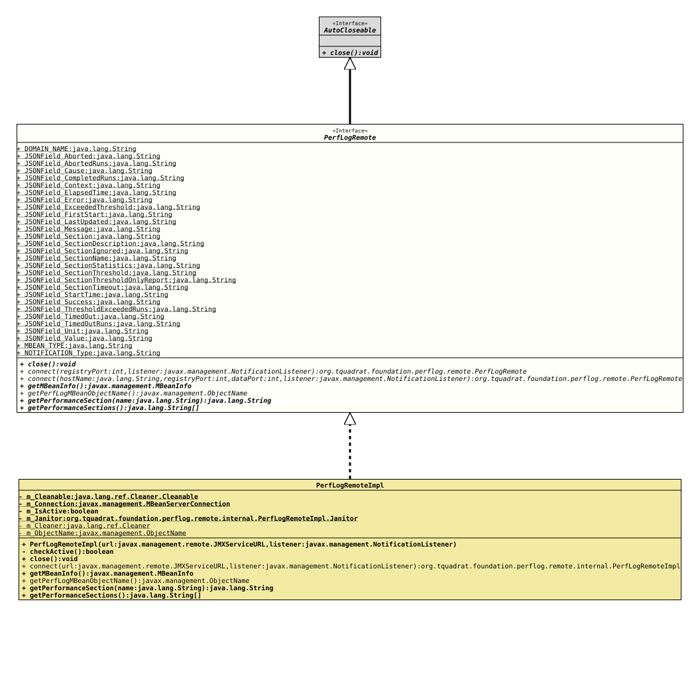

Interface PerfLogRemote
- All Superinterfaces:
AutoCloseable
- All Known Implementing Classes:
PerfLogRemoteImpl
The declaration of a remote client for the Foundation Performance Logging and Monitoring.
- Author:
- Thomas Thrien (thomas.thrien@tquadrat.org)
- Version:
- $Id: PerfLogRemote.java 1229 2026-05-04 19:11:41Z tquadrat $
- Since:
- 0.25.0
- UML Diagram
-

UML Diagram for "org.tquadrat.foundation.perflog.remote.PerfLogRemote"
{kind=link}
-
Field Summary
FieldsModifier and TypeFieldDescriptionstatic final StringThe domain name part of theObjectNameidentifying the Performance Logging MBean in the MBean server: "org.tquadrat.foundation.PerfLog"static final StringThe name of the JSON boolean that holds the aborted flag: "Aborted".static final StringThe name of the JSON Number that holds the number of aborted runs for the performance section: "Aborted".static final StringThe name of the JSON String that holds the cause for the abort of a performance section: "Cause".static final StringThe name of the JSON Number that holds the number of completed runs for the performance section: "Completed".static final StringThe name of the JSON Object that holds the performance section context: "Context".static final StringThe name of the JSON Object that holds the elapsed time: "ElapsedTime".static final StringThe name of the JSON Object that holds an error message: "Error".static final StringThe name of the JSON boolean that holds threshold exceeded flag: "ExceededThreshold".static final StringThe name of the JSON String that holds the time of the first start of the performance section: "FirstStart".static final StringThe name of the JSON String that holds the time when the performance section was last updated: "LastUpdated".static final StringThe name of the JSON String that holds the text of an error message: "Message".static final StringThe name of the JSON Object that holds the data from the performance section: "PerformanceSection".static final StringThe name of the JSON String that holds the description of the performance section: "Description".static final StringThe name of the JSON Boolean that holds the flag indicating whether the performance section is currently ignored: "Ignored".static final StringThe name of the JSON String that holds the name of the performance section: "Name".static final StringThe name of the JSON Object that holds the execution statistics of the performance section: "Statistics".static final StringThe name of the JSON Object that holds the threshold time from the performance section: "Threshold".static final StringThe name of the JSON boolean that holds the flag indicating whether a report should be sent only when the threshold was exceeded: "ThresholdOnlyReport".static final StringThe name of the JSON Object that holds the timeout time from the performance section: "Timeout".static final StringThe name of the JSON String that holds the time when the performance section was entered: "StartTime".static final StringThe name of the JSON Object that holds a success message: "Success".static final StringThe name of the JSON Number that holds the number of performance section runs where the threshold was exceeded: "ThresholdExceeded".static final StringThe name of the JSON boolean that holds timed out flag: "TimedOut".static final StringThe name of the JSON Number that holds the number of performance section runs that timed out: "TimedOut".static final StringThe name of the JSON String that holds the unit for the dimension from a dimensioned value: "Unit".static final StringThe name of the JSON Number that holds the value from a dimensioned value: "Value".static final StringThe type for theObjectNameidentifying the Performance Logging MBean in the MBean server: "PerformanceLogging".static final StringThe type for theNotificationinstances emitted by Performance Logging MBean: "org.tquadrat.foundation.perflog.SectionExec". -
Method Summary
Modifier and TypeMethodDescriptionvoidclose()static PerfLogRemoteconnect(int registryPort, NotificationListener listener) Connects to the Performance Logging MBean specified through the given port number and theObjectNamereturned bygetPerfLogMBeanObjectName().static PerfLogRemoteconnect(String hostName, int registryPort, int dataPort, NotificationListener listener) Connects to the Performance Logging MBean specified through the given host name, port numbers and theObjectNamereturned bygetPerfLogMBeanObjectName().Returns theMBeanInfofor the performance logging MBean.static ObjectNameReturns theObjectNamefor the Performance Logging MBean.getPerformanceSection(String name) Returns the status for the given performance section.String[]Returns a list of the currently defined performance sections.
-
Field Details
-
DOMAIN_NAME
The domain name part of the
ObjectNameidentifying the Performance Logging MBean in the MBean server: "org.tquadrat.foundation.PerfLog".- See Also:
-
JSONField_Aborted
The name of the JSON boolean that holds the aborted flag: "Aborted".- See Also:
-
JSONField_AbortedRuns
The name of the JSON Number that holds the number of aborted runs for the performance section: "Aborted".- See Also:
-
JSONField_Cause
The name of the JSON String that holds the cause for the abort of a performance section: "Cause".- See Also:
-
JSONField_CompletedRuns
The name of the JSON Number that holds the number of completed runs for the performance section: "Completed".- See Also:
-
JSONField_Context
The name of the JSON Object that holds the performance section context: "Context".- See Also:
-
JSONField_ElapsedTime
The name of the JSON Object that holds the elapsed time: "ElapsedTime".- See Also:
-
JSONField_Error
The name of the JSON Object that holds an error message: "Error".- See Also:
-
JSONField_ExceededThreshold
The name of the JSON boolean that holds threshold exceeded flag: "ExceededThreshold".- See Also:
-
JSONField_FirstStart
The name of the JSON String that holds the time of the first start of the performance section: "FirstStart".- See Also:
-
JSONField_LastUpdated
The name of the JSON String that holds the time when the performance section was last updated: "LastUpdated".- See Also:
-
JSONField_Message
The name of the JSON String that holds the text of an error message: "Message".- See Also:
-
JSONField_Section
The name of the JSON Object that holds the data from the performance section: "PerformanceSection".- See Also:
-
JSONField_SectionDescription
The name of the JSON String that holds the description of the performance section: "Description".- See Also:
-
JSONField_SectionIgnored
The name of the JSON Boolean that holds the flag indicating whether the performance section is currently ignored: "Ignored".- See Also:
-
JSONField_SectionName
The name of the JSON String that holds the name of the performance section: "Name".- See Also:
-
JSONField_SectionStatistics
The name of the JSON Object that holds the execution statistics of the performance section: "Statistics".- See Also:
-
JSONField_SectionThreshold
The name of the JSON Object that holds the threshold time from the performance section: "Threshold".- See Also:
-
JSONField_SectionThresholdOnlyReport
The name of the JSON boolean that holds the flag indicating whether a report should be sent only when the threshold was exceeded: "ThresholdOnlyReport".- See Also:
-
JSONField_SectionTimeout
The name of the JSON Object that holds the timeout time from the performance section: "Timeout".- See Also:
-
JSONField_StartTime
The name of the JSON String that holds the time when the performance section was entered: "StartTime".- See Also:
-
JSONField_Success
The name of the JSON Object that holds a success message: "Success".- See Also:
-
JSONField_ThresholdExceededRuns
The name of the JSON Number that holds the number of performance section runs where the threshold was exceeded: "ThresholdExceeded".- See Also:
-
JSONField_TimedOut
The name of the JSON boolean that holds timed out flag: "TimedOut".- See Also:
-
JSONField_TimedOutRuns
The name of the JSON Number that holds the number of performance section runs that timed out: "TimedOut".- See Also:
-
JSONField_Unit
The name of the JSON String that holds the unit for the dimension from a dimensioned value: "Unit".- See Also:
-
JSONField_Value
The name of the JSON Number that holds the value from a dimensioned value: "Value".- See Also:
-
MBEAN_TYPE
The type for theObjectNameidentifying the Performance Logging MBean in the MBean server: "PerformanceLogging".- See Also:
-
NOTIFICATION_Type
The type for theNotificationinstances emitted by Performance Logging MBean: "org.tquadrat.foundation.perflog.SectionExec".- See Also:
-
-
Method Details
-
close
void close()- Specified by:
closein interfaceAutoCloseable
-
connect
static PerfLogRemote connect(int registryPort, NotificationListener listener) throws InstanceNotFoundException, IOException Connects to the Performance Logging MBean specified through the given port number and the
ObjectNamereturned bygetPerfLogMBeanObjectName().This method creates a local connection (both processes are running on the same machine).
- Parameters:
registryPort- The number of the registry port.listener- The notification listener.- Returns:
- The
PerfLogRemoteinstance that manages the connection to the performance logging MBean. - Throws:
IOException- Unable to connect to the MBean server.InstanceNotFoundException- There is no performance logging MBean registered on the MBean server.
-
connect
static PerfLogRemote connect(String hostName, int registryPort, int dataPort, NotificationListener listener) throws IOException, InstanceNotFoundException Connects to the Performance Logging MBean specified through the given host name, port numbers and the
ObjectNamereturned bygetPerfLogMBeanObjectName().This method creates a remote connection (both processes are probably running on different machines).
- Parameters:
hostName- The host name.registryPort- The number of the registry port.dataPort- The number of the data port; can be the same as the registry port.listener- The notification listener.- Returns:
- The
PerfLogRemoteinstance that manages the connection to the performance logging MBean. - Throws:
MalformedURLException- It is not possible to compose a validJMXServiceURLwith the givenhostName.IOException- Unable to connect to the MBean server.InstanceNotFoundException- There is no performance logging MBean registered on the MBean server.
-
getMBeanInfo
MBeanInfo getMBeanInfo() throws IllegalStateException, ReflectionException, InstanceNotFoundException, IntrospectionException, IOExceptionReturns theMBeanInfofor the performance logging MBean.- Returns:
- The
MBeanInfo. - Throws:
IllegalStateException- The instance was already closed.IntrospectionException- An exception occurred during introspection.InstanceNotFoundException- The MBean specified was not found.ReflectionException- An exception occurred when trying to invoke the methodgetMBeanInfo()of a Dynamic MBean.IOException- A communication problem occurred when talking to the MBean server.
-
getPerfLogMBeanObjectName
Returns theObjectNamefor the Performance Logging MBean.- Returns:
- The object name for the MBean.
-
getPerformanceSection
String getPerformanceSection(String name) throws IllegalStateException, ReflectionException, InstanceNotFoundException, MBeanException, IOException Returns the status for the given performance section.
- Parameters:
name- The name of the performance section.- Returns:
- The status of the performance section, or a message indicating what failed in case of error, as a JSON String.
- Throws:
IllegalStateException- The instance was already closed.ReflectionException- An exception occurred when trying to invoke the methodgetAttribute()of a Dynamic MBean.MBeanException- Wraps an exception thrown by the MBean method.InstanceNotFoundException- The MBean specified was not found.IOException- A communication problem occurred when talking to the MBean server.
-
getPerformanceSections
String[] getPerformanceSections() throws IllegalStateException, ReflectionException, AttributeNotFoundException, InstanceNotFoundException, MBeanException, IOExceptionReturns a list of the currently defined performance sections.
- Returns:
- The list of the performance section names.
- Throws:
IllegalStateException- The instance was already closed.ReflectionException- An exception occurred when trying to invoke the methodgetAttribute()of a Dynamic MBean.MBeanException- Wraps an exception thrown by the MBean method.InstanceNotFoundException- The MBean specified was not found.AttributeNotFoundException- The attribute was missing.IOException- A communication problem occurred when talking to the MBean server.
-